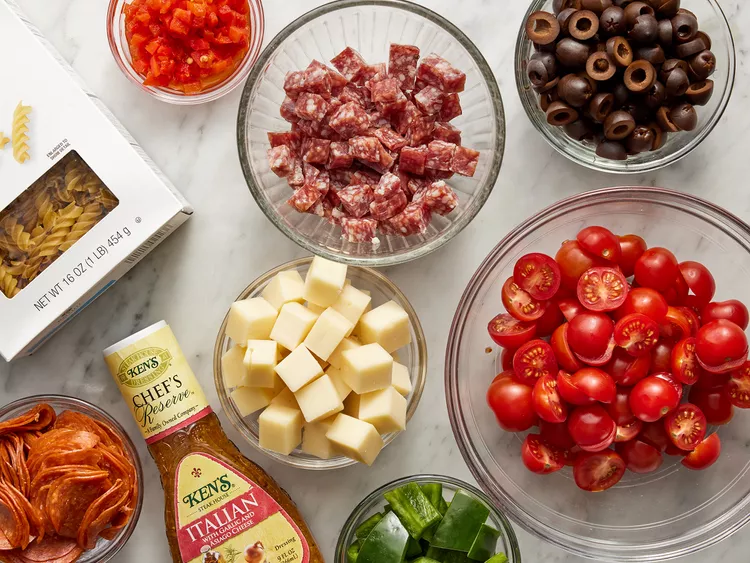

This pasta salad with pepperoni, tomatoes, and provolone cheese is the best I've ever eaten, and people request it frequently. It's a very easy, light-tasting side dish for a picnic or dinner.
Gather all ingredients.
Bring a large pot of lightly salted water to a boil. Cook fusilli in the boiling water, stirring occasionally, until tender yet firm to the bite, about 12 minutes. Drain.
Combine fusilli with tomatoes, cheese, salami, pepperoni, green pepper, olives, and pimentos in a large bowl. Pour in salad dressing; toss to coat.

Enjoy!
 Home Page
Home Page